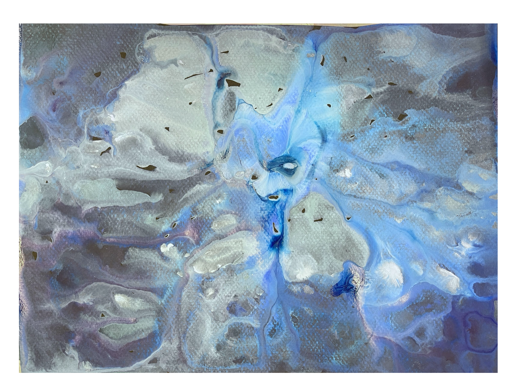

Untitled

Year: 2022
Medium: Acrylic paint on paper
Scale: 8.27 x 11.69 inches
In the vast and varied realm of color and form, I find a boundless playground of emotion and memory. Each of my brushstrokes tries to navigate the blurred border between consciousness and dreams. The ebb and flow of different mediums as they mix, bleed, and morph echoes the complex throb of my emotions. Each layer is a whisper of a feeling; a shadow of a thought; a reflection of a fleeting moment.
Homepage